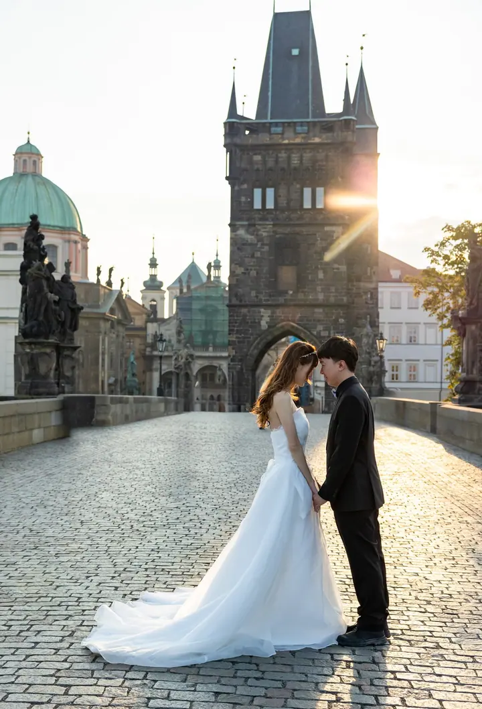
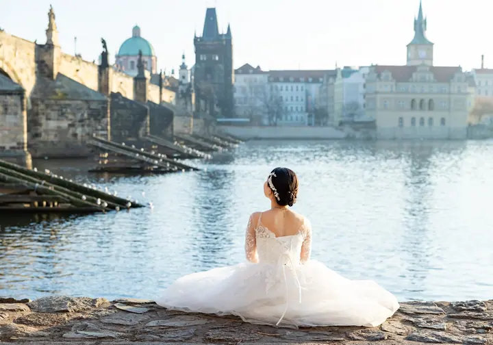
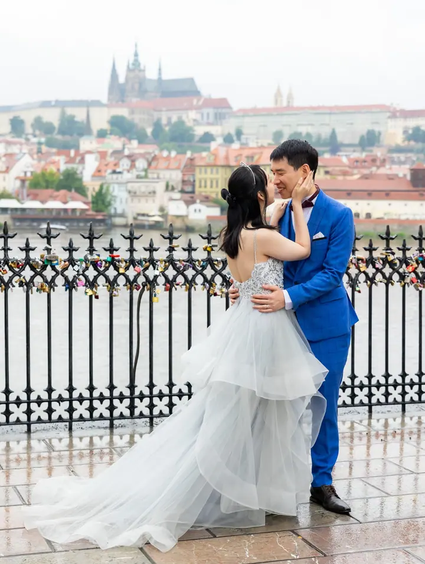
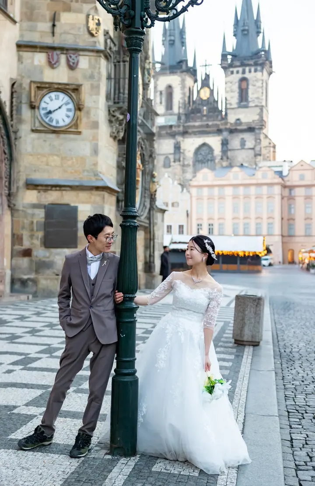

Svatby
Fotím svatby v Praze i v jiných evropských městech. Od obřadu po procházku historickým centrem s novomanželi.





Jmenuji se Julia Kazakova a jsem portrétní fotografka. Už přes pět let žiji a pracuji v Praze, kde ráda fotím svatby a páry v historických uličkách a na nábřeží Vltavy.
Více o mně
„Celá Praha jako kulisa pro vás dva“
— Julia Kazakova
Fotím svatby v Praze i v jiných evropských městech. Od obřadu po procházku historickým centrem s novomanželi.
Fotím páry v pražských uličkách, na nábřeží i na Karlově mostě. Hodí se k zásnubám, výročí i jen tak pro radost.
Jsem portrétní fotografka a fotím ženské i mužské portréty. Společně najdeme místo a světlo, které vám budou sedět.
Fotím rodiny s dětmi venku v Praze, v klidu a bez spěchu.
Fotografie jsou ilustrační
Jmenuji se Julia a jsem portrétní fotografka. Praha je už přes pět let můj domov i místo, kde nejčastěji fotím. Karlův most, Staroměstské náměstí nebo cesta pod Hradem jsou pro mě jako druhý ateliér.
Fotím svatby, páry, ženské i mužské portréty, děti a rodiny. Ráda vás vyfotím u nás v Praze, ale klidně přijedu i za vámi do jiného evropského města.
V mezinárodní soutěži 35awards mě porota zařadila mezi 35 nejlepších fotografů v Praze a 50 nejlepších v České republice. Těší mě to, ale nejvíc mě baví, když se u focení cítíte příjemně a fotky jsou opravdu vaše.
Pošlete mi termín, místo a co byste chtěli fotit. Ozvu se vám a pošlu aktuální ceník.
Společně vybereme místa v Praze nebo jiném městě a denní dobu s nejhezčím světlem.
Na místě vás povedu, ale nechám vám prostor být sami sebou. Žádné strnulé pózování.
Fotky vyberu, pečlivě upravím a pošlu vám je v online galerii.
Ano. Žiji a fotím v Praze, ale ráda za vámi přijedu i do jiných evropských měst.
Ceny se liší podle typu a délky focení. Napište mi, co plánujete, a pošlu vám aktuální ceník.
Brzy ráno bývají Karlův most i Staroměstské náměstí klidné a světlo je měkké. Rádi spolu vybereme čas, který vám bude vyhovovat.
Ano, kromě svateb a párů fotím i děti, rodiny a ženské i mužské portréty.